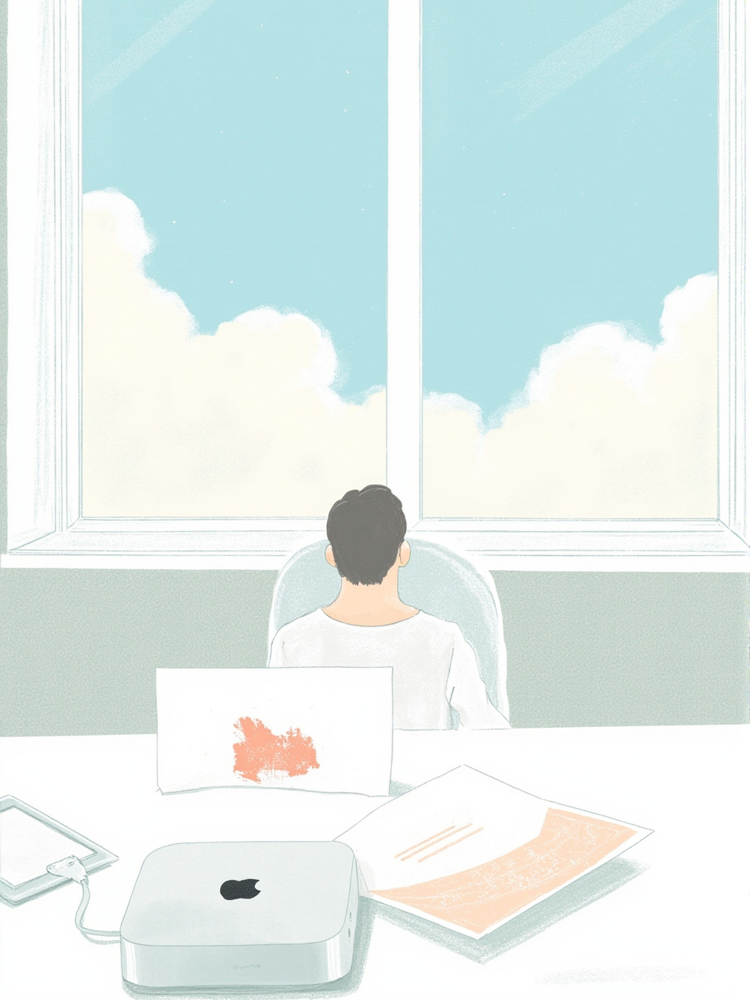
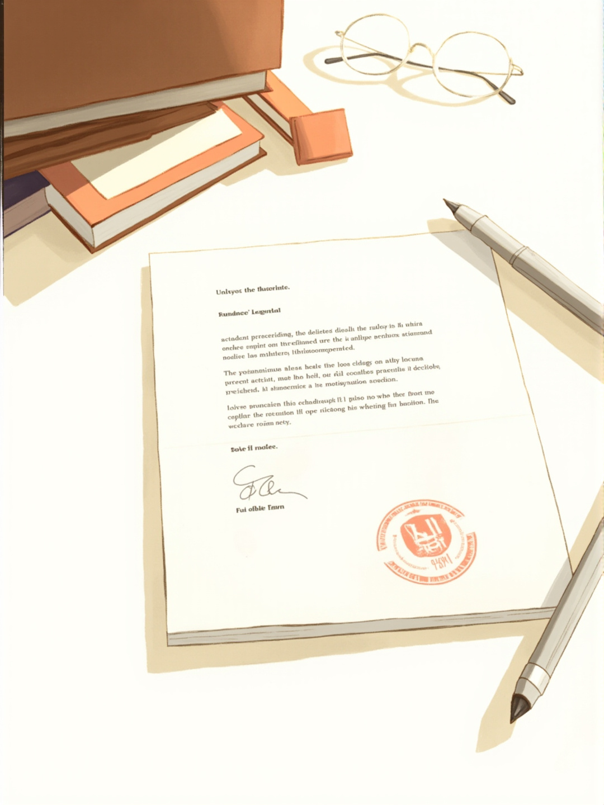
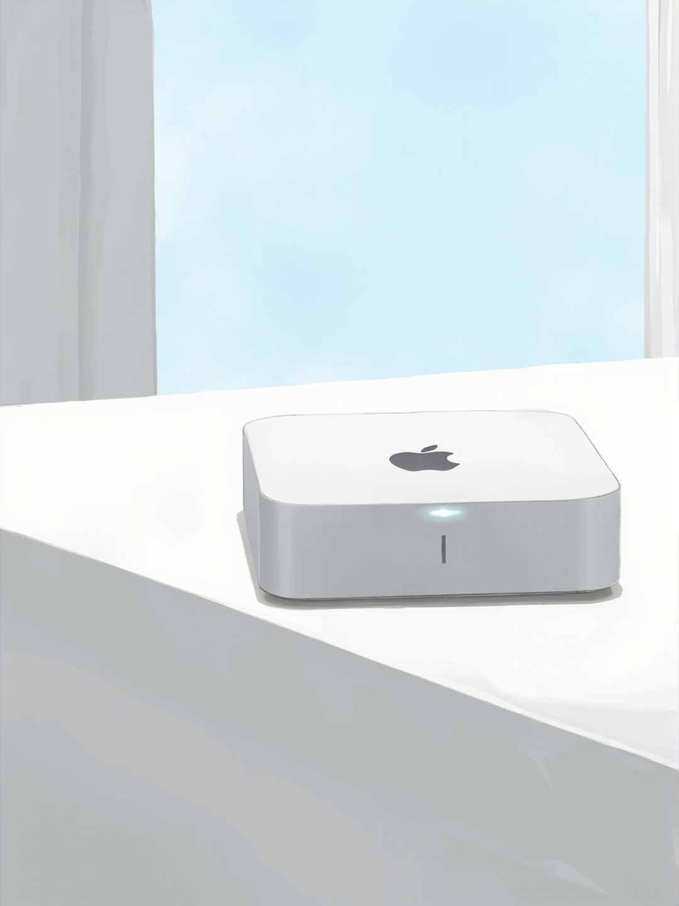
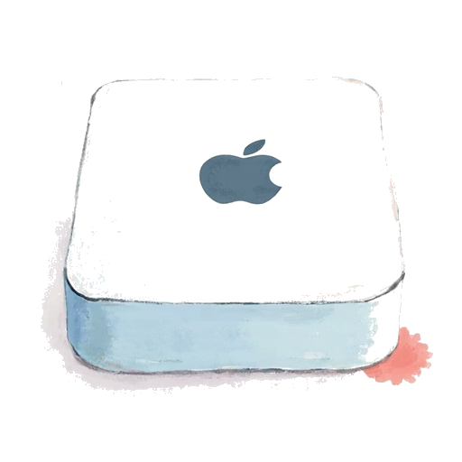
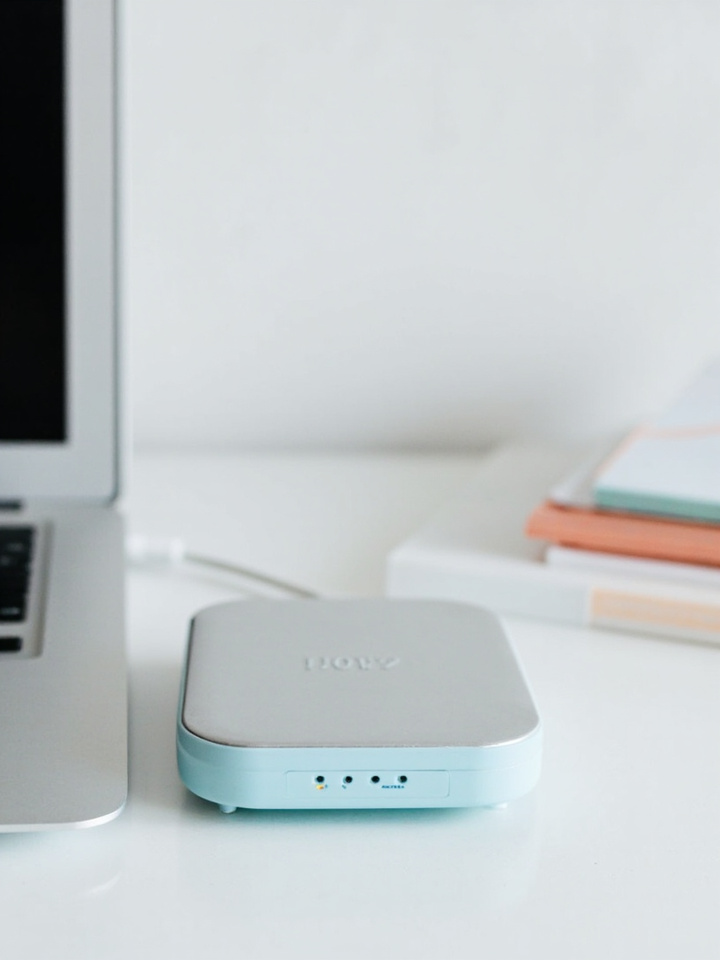
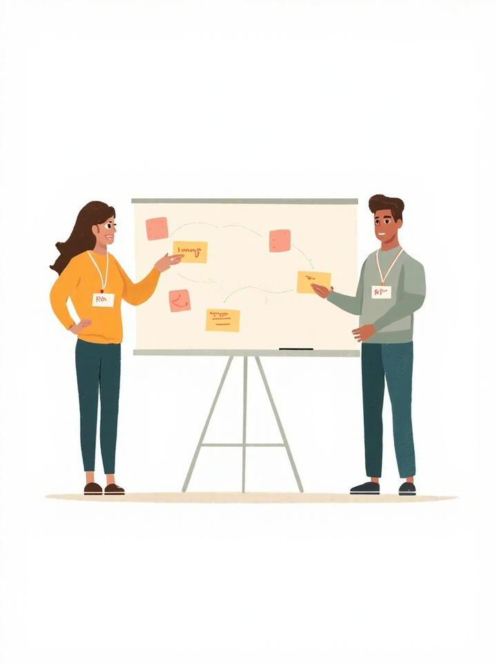
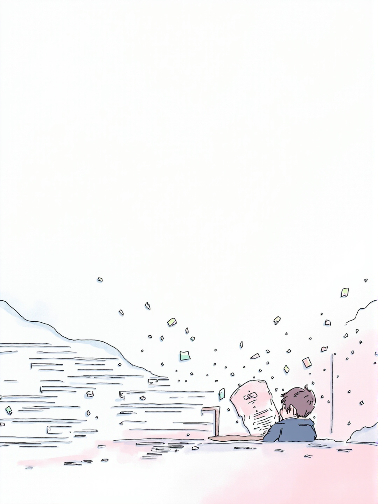
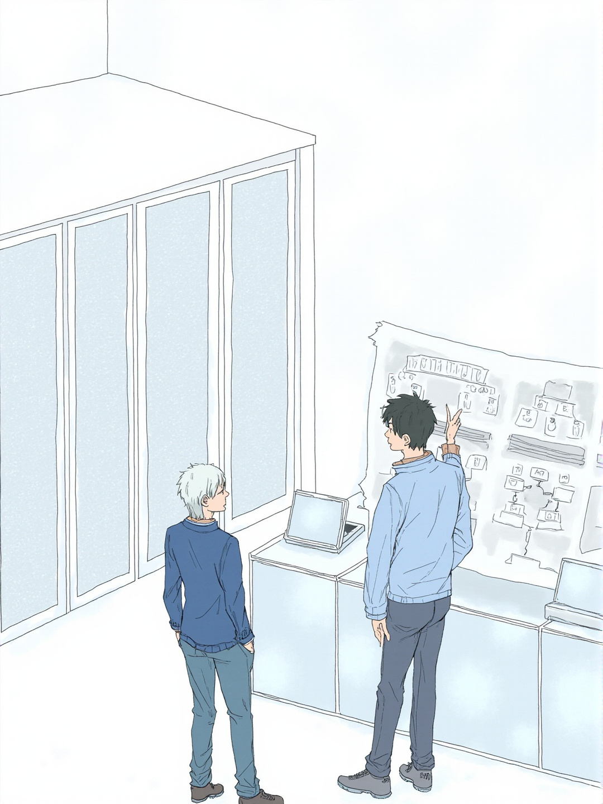
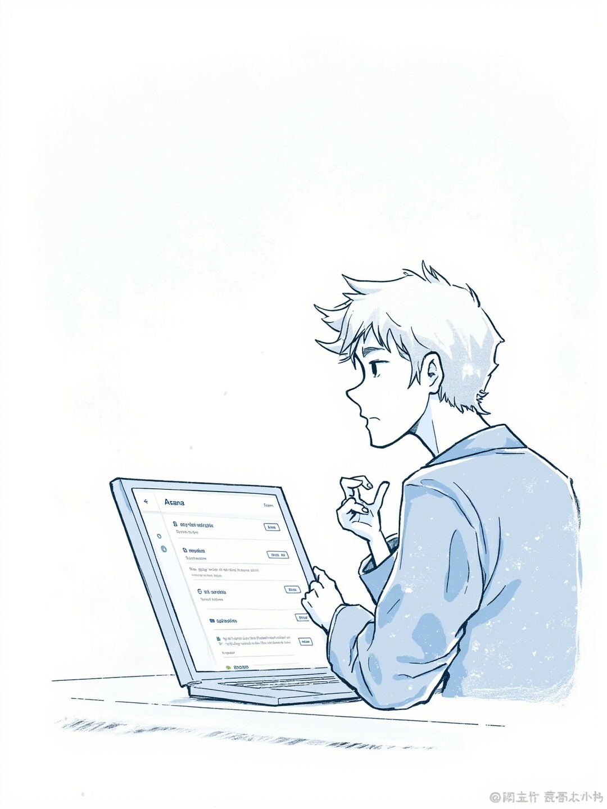
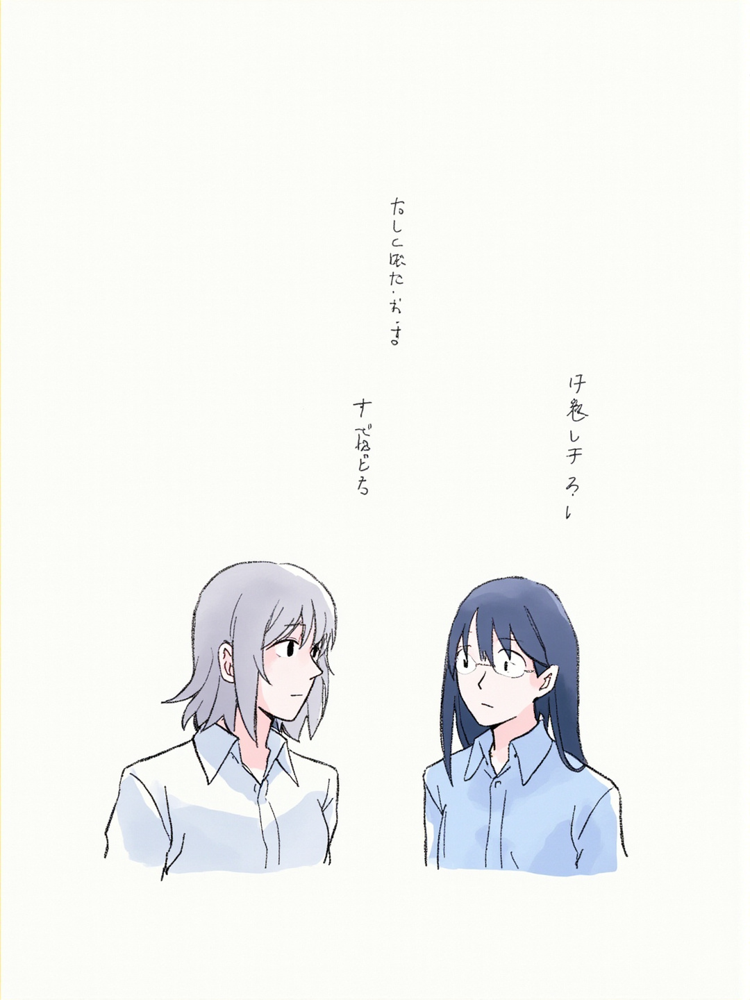

第 01 章照片
QA 離職交接會議
照片 · 2026年9月1日
QA 離職交接會議

照片 · 2026年9月1日 · 1/2
QA 離職交接會議


01QA 離職交接會議
照片 · 2026年9月1日 · 2/2
QA 離職交接會議

我的漫畫人生 · 4 章
照片 · 2026年9月1日

照片 · 2026年9月1日 · 1/2


01QA 離職交接會議
照片 · 2026年9月1日 · 2/2

日常 · 2026年9月1日
日常 · 2026年9月1日 · 1/2

01完成備份。
02QA shiftleft docker測試。
03新 Android 工程師 onboard。
日常 · 2026年9月1日 · 2/2

01RD 與 PM 溝通障礙調節。
02DevOps JD + self-hosted Sentry。
日常 · 2026年9月2日

日常 · 2026年9月2日


01公司中元節團拜，我擔任主祭。
02沒有香燭的科技公司，卻在這天多了幾分肅穆。
03調解 RD 與 PM 的內容產出矛盾，雙方節奏不同，各自退一步就能對得上。
日常 · 2026年9月3日

日常 · 2026年9月3日



01與 Bruce 協調公司伺服器對內、對外機器的設置與搭配。
02要求 RD 部門：Asana 票只能回答票的相關內容，不得超越職責隨意給建議。
03與 RD 溝通職場倫理問題。